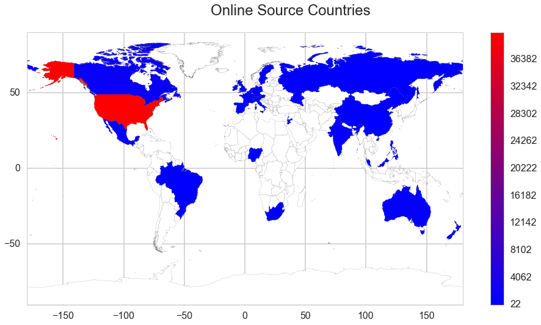
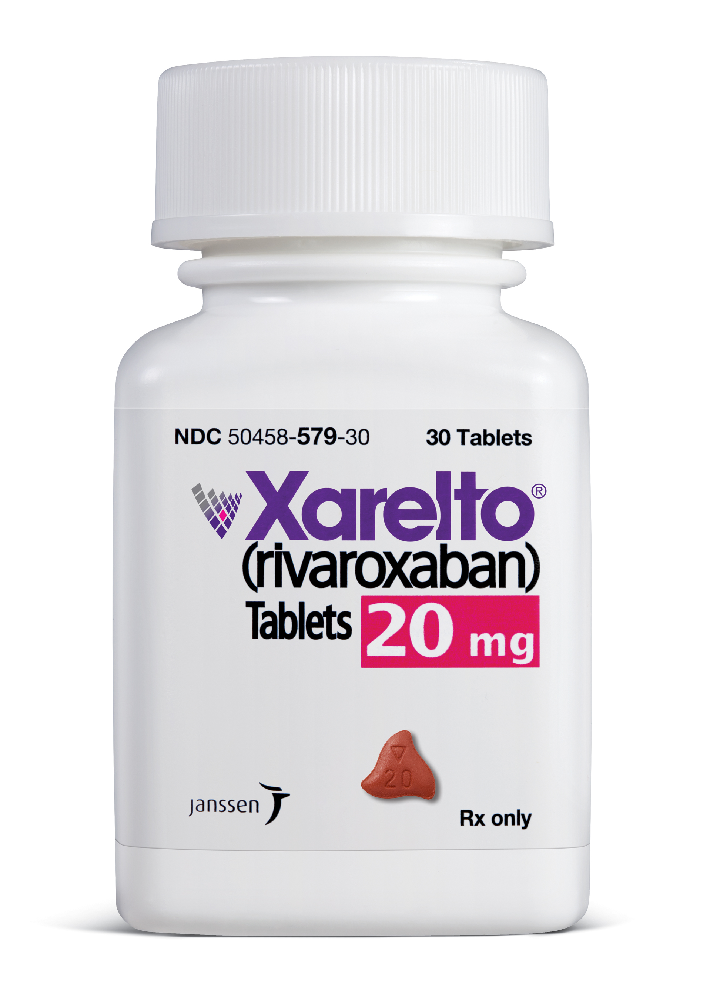
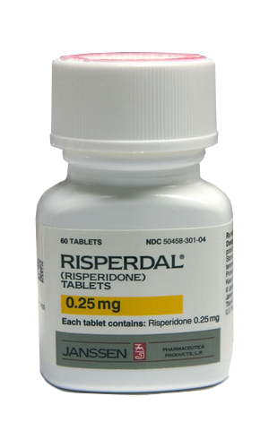

Every year, commonly available medication is withdrawn from the market due to safety concerns. From the market withdrawal of Thalidomide (a sedative causing foetal malformation) in the early 60s, to the withdrawal of Vioxx (a painkiller causing heart-attacks and strokes, marketed for 5 years) in the mid 00s, the need for withdrawal of marketed medication constitutes an important health hazard.
In order to gain marketing authorization for clinically approved medical products, pharmaceutical companies should demonstrate the capability to gather post-marketing reports of side effects through local country offices and telephone hotlines. With the widespread use of social media, the tendency to report side effects to the general public has risen tremendously.
So we started to wonder: what if we have tons of social media posts and data, and we run some data analysis ... could we get some new side effects that the pharmaceuticals aren't aware of ?
We had some awesome data to use:
And our data came from all over the world ...
So the question was: which drugs should we investigate?. Well, we took the top 300 drugs named on postings having the words "adverse effects" or "side effects" in their post. After having a look at them we came up with our very own top 22:
As you can see, it's a short list, and in it we have hightlighted 2 drugs. Bear them in mind for a little while, we will shortly talk about them.
We used 2 techniques for our analysis:
Word Categorization (LDA)
In our first approach, we tried to see if we could dig into social media data and find what were the most common side effects for a group of specifics drugs.
Sadly, this approach didn´t work so well, so we did a little literature review about it and we found that there were 3 major articles published about side effects, and they used different techniques:
So as you can see, neither of them used LDA for this kind of investigation, and we believe that detection of side effects from social media is a young branch of data science, and sometimes when you try something new you won't get the best answer right away.
Comparing listed effects vs reported effects
Now, after doing Word Categorization, we started to compare our listed side effects from FDA and other pharmaceutical associations and what we found in social media posts
We didn't have the time to do ech of the 22 drugs listed before, so we picked 2:
Xarelto
Xarelto (rivaroxaban) is an anticoagulant (blood thinner) that prevents the formation of blood clots. Xarelto is used to prevent or treat a type of blood clot called deep vein thrombosis (DVT), which can lead to blood clots in the lungs (pulmonary embolism). A DVT can occur after certain types of surgery.
Risperdal
Risperdal is used to treat schizophrenia and symptoms of bipolar disorder (manic depression). Risperdal is also used in autistic children to treat symptoms of irritability. Risperdal has been in the news quite a bit because of some fraudulent activity and fines received by Jansen in what and how Risperdal was prescribed by US doctors.
With these two drugs, we proceed to analize all their social media effects and cross it with all known side effects. Then we ran a validation test to see if our findings were significant, from a statistical point of view.
So lets move to our results ...
We found new unknown side effects for these 2 drugs:
Risperdal
Xarelto
Even though this is a small finding, it shows how powerfull can be social media. The pharmaceutical can get more unknown side effects investigating people posts and discussions in forums, or at least get a hint on what symptoms are people talking about when they use their products.